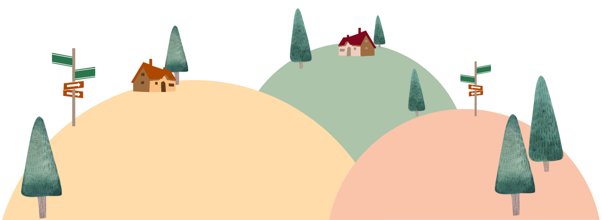

a network engineer and an aspiring data scientist
I am Nining. I have been working for more than 10 years in the IT and network operations field.
Doing day to day IT operation, troubleshooting, setting and configuring
network devices, making some web and simple application are something fun for me.
Currently I am learning about Python coding to up my skills.
Many of my friends say that I am a cheerful person, loves challenges,
explorer, creative and sometimes little bit crazy.
But actually I'm an introvert,
I like to spend more time in my house to play with my laptop and my cats.
Setting and configuring Cisco and other network devices such as Juniper and Mikrotik from the scratch. Knowing about network topology, TCP/IP, routing, switching, DNS, access list and VoIP. Currently more involved with fiber optic network technology.
Creating applications with Pascal, Visual Basic, C++ programming while in college and creating web-based applications using HTML, PHP, CSS, MySQL and JavaScript while working in telecommunications companies. Currently passionate about Python programming.
Designing is one of my hobbies. Have experiences using Adobe Photoshop, Corel Draw, Canva and Figma to design UI / UX and also design others, such as brochures, flyers, logos, business cards, and others.
Just click the button bellow and let's have a discussion about networking,
coding or design ideas. Or maybe you want to hired me to be one of your
best employees.
Don't hesitate to contact me!